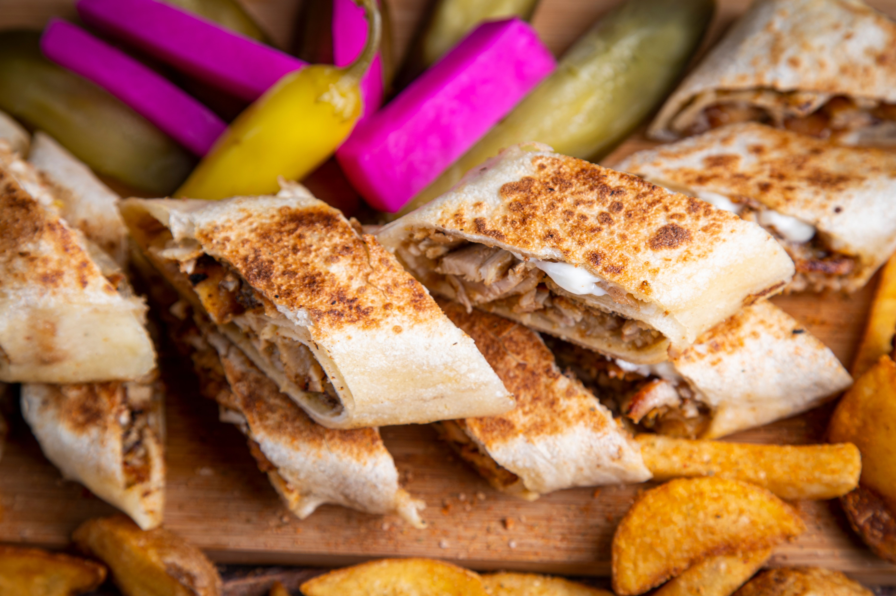

Home
Shawarma Recipe

Description
Shawarma is a beloved Middle Eastern dish made from thinly sliced, marinated meat that is slow-roasted on a vertical
spit until perfectly tender and flavorful. Served in warm bread or on a plate, it is complemented by fresh vegetables,
pickles, and rich sauces that create a satisfying balance of textures and tastes.
Known for its aromatic spices and juicy texture, shawarma has become a favorite around the world. Whether enjoyed as a
quick street-food meal or a hearty lunch with family and friends, every bite delivers a delicious combination of
tradition, flavor, and comfort.
Ingredients
- 500g boneless chicken thighs
- 1 cup plain yogurt
- 2 tablespoons olive oil
- 2 tablespoons lemon juice
- 4 cloves garlic, minced
- 1 teaspoon ground cumin
- 1 teaspoon ground coriander
- 1 teaspoon paprika
- 1/2 teaspoon turmeric
- 1/2 teaspoon ground cinnamon
- 1 teaspoon salt
- 1/2 teaspoon black pepper
- 1 small onion, sliced
- 2 tablespoons fresh parsley, chopped
- 4 pita breads or flatbreads
- 2 tomatoes, diced
- 1 cup lettuce, shredded
- 1 cucumber, sliced
- 1/2 cup pickles, sliced
- 1/4 cup tahini sauce or garlic sauce
Steps
- In a large bowl, combine 1 cup plain yogurt, 2 tablespoons olive oil, 2 tablespoons lemon juice, 4 minced garlic
cloves, 1 teaspoon ground cumin, 1 teaspoon ground coriander, 1 teaspoon paprika, 1/2 teaspoon turmeric, 1/2
teaspoon ground cinnamon, 1 teaspoon salt, and 1/2 teaspoon black pepper.
- Add 500g boneless chicken thighs to the marinade and mix until the chicken is evenly coated.
- Cover the bowl and refrigerate for at least 2 hours, preferably overnight.
- Preheat the oven or grill to 200°C (400°F).
- Place the marinated chicken on a baking tray or grill and cook for 25–30 minutes, or until fully cooked and
lightly charred.
- Remove the chicken from the heat and let it rest for 5 minutes before slicing it into thin strips.
- Warm 4 pita breads or flatbreads until soft and pliable.
- Prepare the fillings by dicing 2 tomatoes, shredding 1 cup lettuce, slicing 1 cucumber, and preparing 1/2 cup
sliced pickles.
- Fill each pita bread with the sliced chicken, vegetables, pickles, and 2 tablespoons fresh chopped parsley.
- Drizzle with 1/4 cup tahini sauce or garlic sauce, dividing it among the wraps.
- Wrap the shawarma tightly, serve immediately, and enjoy.